[玫瑰]需要热度
见到本人了 人特别好 篮球基本功特别扎实 期待下次见 未来之妞[比心] 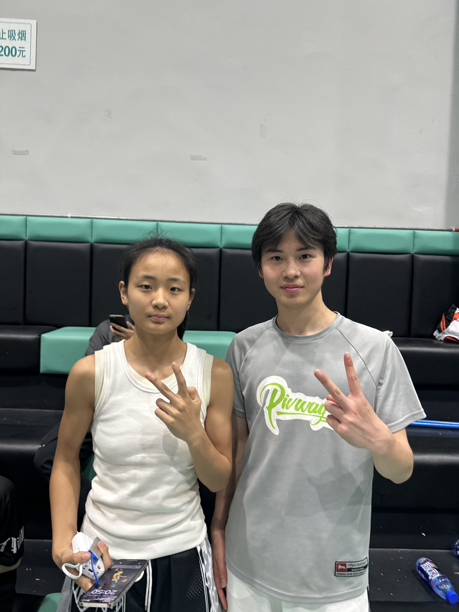
不是？右小臂竖直！[发呆][发呆][发呆]
这是见过最漂亮的女生跳投了，没有之一。
这伸展，这滞空，这协调。小姑娘真厉害。把我的拖鞋来拿，我要去打儿子了
不是姐妹？！？！[憨笑] 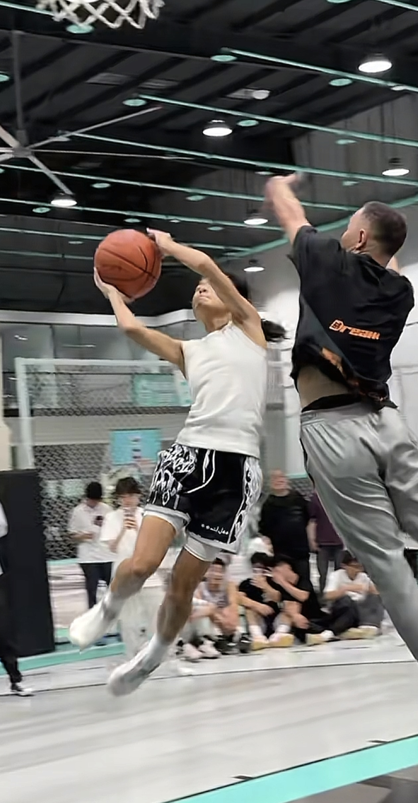
这种才是真打球的女生，吊打抖音现在99%的篮球女网红
想看罗可馨和她打一个百分大战[黑脸][黑脸][黑脸]
别的评论区看到的 已经看死了[愉快] 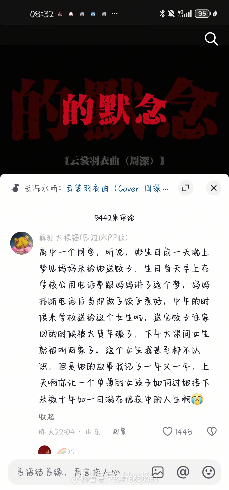
这就是中国速度，开口就是高楼[憨笑]
“恨还没成型，爱先做出决定”[流泪] 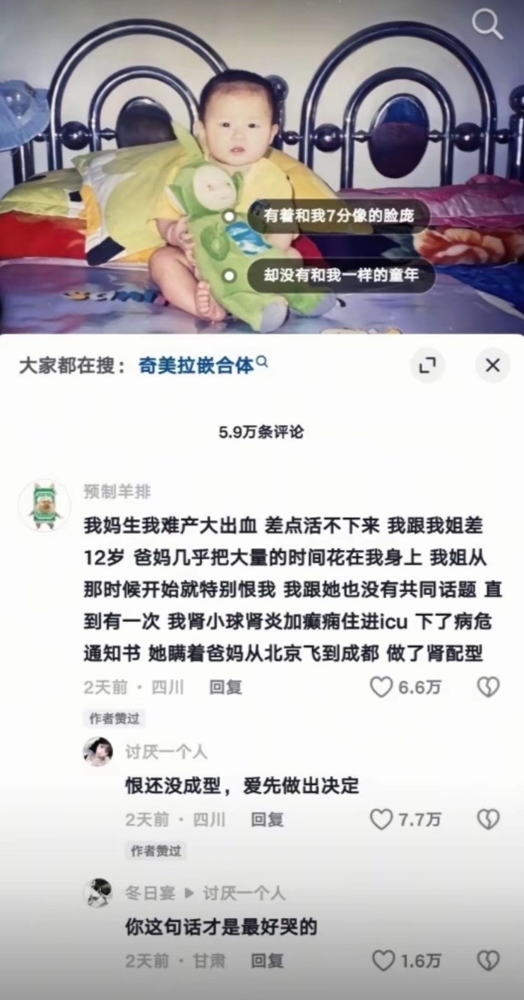
家家都有本难念的经，而这里有一万本 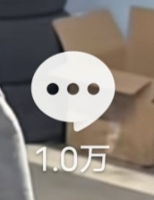
我之前刷到一个评论，一个男的出车祸死了，他的女朋友自杀殉情了，死了之后的几天女方家属得知那个男的是死在去找三的路上
不行，我真的忘不掉这个，第一次被爱情感动[流泪][流泪][流泪] 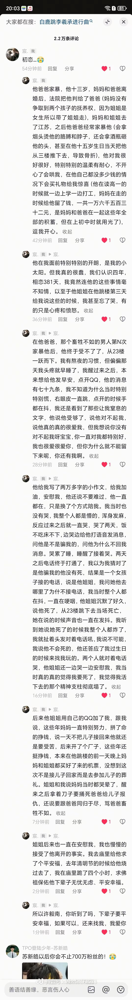
这个我真的泪崩了[流泪][泣不成声] 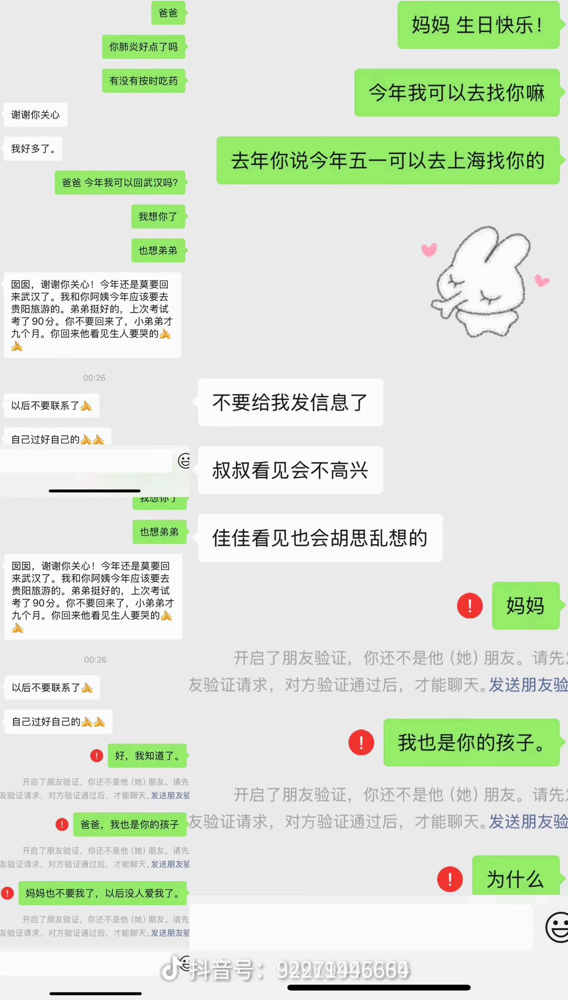
给我看死了[流泪] 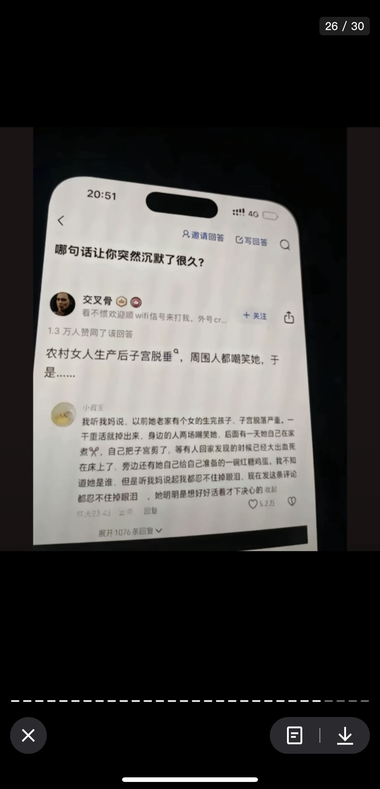
这个[流泪] 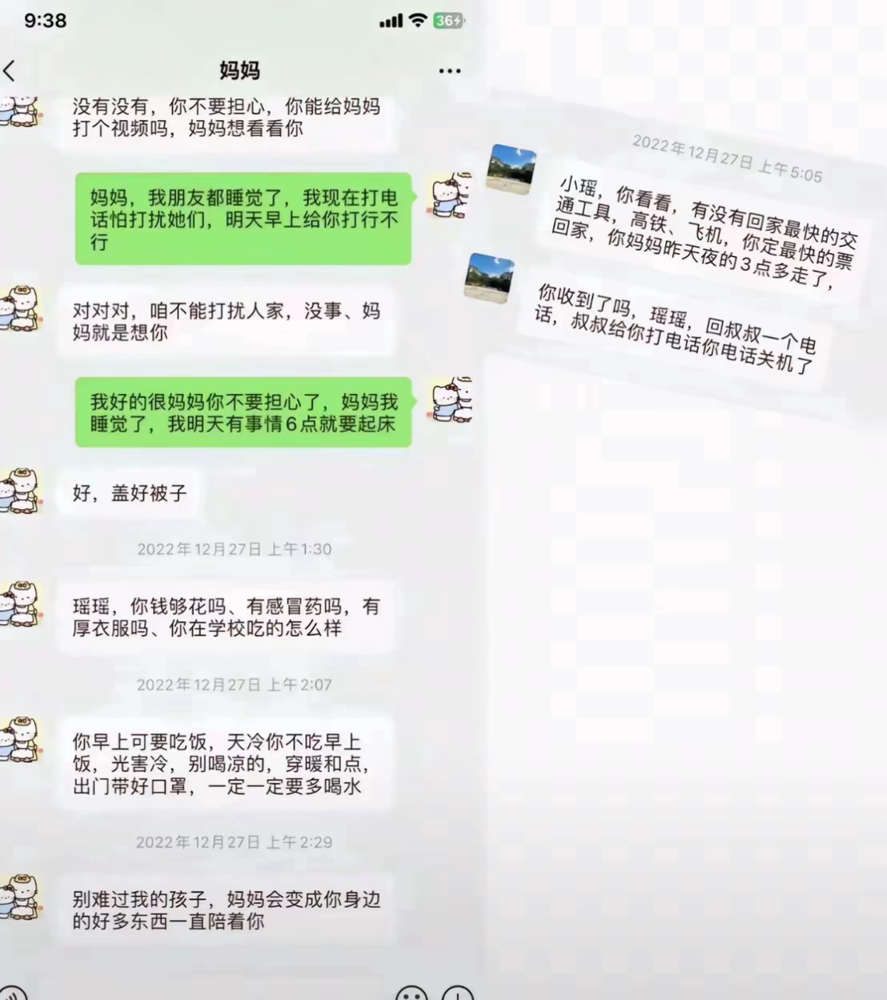
我真的受不了这个了[流泪] 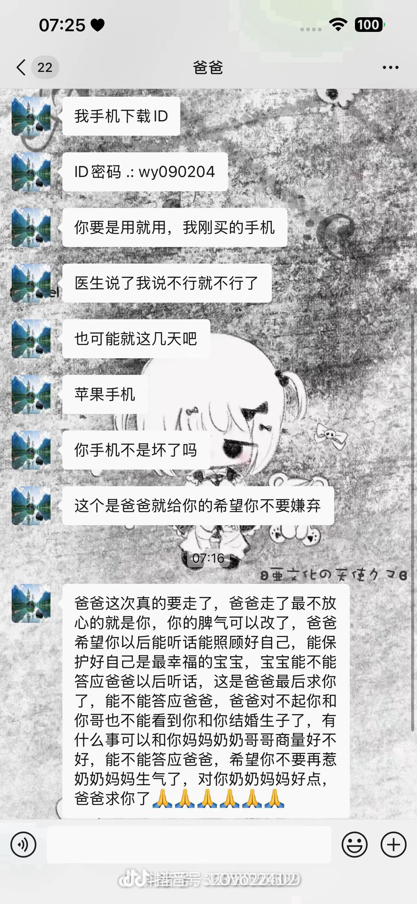
看一次哭一次 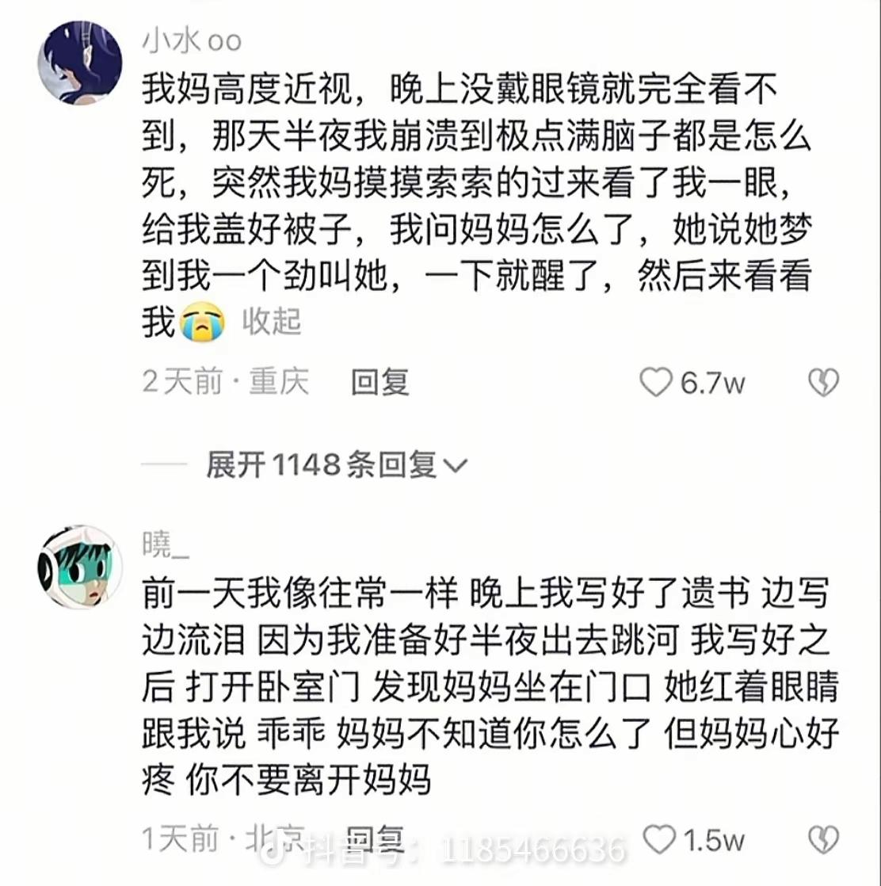
最近你居然不爱我了，这个系列我每次刷到都很心痛，因为在这句话火之前，我就从我奶奶嘴里听到过，我爷爷有钱，他用钱养着另一个女人，在她那吃饭，陪她逛街，他们整天腻在一起恍若新婚夫妻，我奶奶发现后的第二个月得了老年痴呆，她什么都不记得了，甚至不记得我，但每次去见她，她总是跟我讲当年17岁的爷爷追她的故事，讲他们年少夫妻，讲他们青梅竹马，讲爷爷对她有多好，讲他们没钱时爷爷为了给她买一个新裙子省吃俭用，有一天凌晨4点，我起床上厕所，听到压抑的啜泣声，奶奶的房门开着一条缝，一直喃喃自语的重复一句话，你居然不爱我了.........我不知道说什么，他们明明熬过了苦日子，明明已经共白头....
我干dj后再一次见识了人性，我看见过大哥左拥右抱着女孩，花钱如流水，媳妇在家里带着俩个孩子，好兄弟帮着瞒，甚至在庆幸没让发现，都在大笑的时候只有我在心疼家里哄孩子睡觉出不来的那位妻子，我心疼她为家庭牺牲为家庭付出，而自己的丈夫在花天酒地，我也看见过带着不同的女性来酒吧玩，让我们称呼为大嫂子小嫂子和正主，每一次来的女孩脸上都洋溢着幸福，女孩之间也不知道彼此的存在，我还见过为情所困的男生，我以为的纯爱战士，原来也可以深爱着那位女孩的同时，前前后后睡了五个不同的女孩，甚至记不起名字，爱是勇敢者的游戏，一千块可以让女孩一整晚陪你喝酒，三千块可以买走一个女孩的夜晚，大家在高呼想要被爱的同时又做着玷污爱情的事，婚礼上的戒指和誓言也并不影响和其他人拥吻，我讨厌不真诚的人，不真诚的爱，也印证了那句话，爱情就是包着奶油的狗屎
想起来了一个好几年前看到的新闻，一个母亲为了给生重病的儿子筹钱治疗，想起来自己曾经买过一个保险，节俭很久的她买了包速冻水饺吃完就跳楼了，但是她并不知道自杀是不能获得赔偿 的，而她那份保险也已过期一年了
我的爸爸和妈妈是在广州工作认识的，妈妈感受到了爱，他们开始恋爱闪婚，一切都是美好的，但到妈妈怀孕后，爸爸开始变得不着家妈妈不知道为什么，直到小三打电话过来挑衅我妈妈，妈妈才知道爸爸在外面玩的很花，还染上了d，26岁的妈妈不知道该怎么办，整个孕期都是她一个人，生完我也是一个人，产后抑郁压的她喘不过气，那个时候我六个月，她原本是想把我掐死然后自己上吊的，她说，她想一个人去死的，但是放心不下我，小小一个我一个人怎么才能在残酷的世界里活下来呢，她想带我走，准备动手的时候，我嘴里发出mama的拟声词，她下不去手了，开始打官司离婚，一个人带着我远走他乡，妈妈很爱我，她为了带我选择低嫁，只为了我也有爸爸，妈妈很爱我，即使是和新爸爸生了妹妹她也更爱我，因为我是早产儿，生出来就比别人身体差，所以她的关心永远有一大半都给了我，妈妈很爱我，新爸爸也很好，我想，我也有个幸福的家，2021年5月2日，我初一，和同学一起去小学看老师，回家发起了高烧，妈妈在外面上班，只有爸爸在家，爸爸会好好照顾我的吧，第一次醒来，他在摸我的胸，他说是在给我按摩，他说他给妈妈也是这么按摩的，第二次醒来，我身上的衣服都不见了
[流泪] 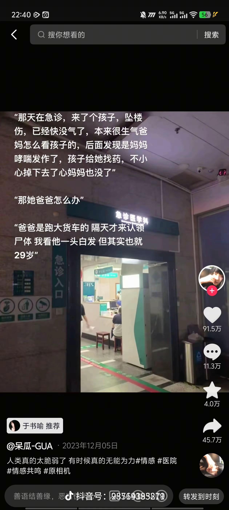
小学的时候爷爷在北京的icu里治了好久，爸妈都去北京陪着，我在姥姥家住，后来有一天凌晨三点，我睡的正香，我姥姥把我晃醒和我说我爷爷回来了，我高兴的合不拢嘴，直到我在家我家楼下看到支起来的灵堂
以当事人的视角来说吧 我最好的异性朋友 那天我们早上三个去打羽毛球 他迟到快二十分钟 我催了他 我说你什么时候到 快点 我们都在等你 就是因为我说的这句话 他开电瓶车加速了 出了车祸 今天是他去世的第42天 他出事的时候很多人看见了 躺在地上脑出血 浑身都是伤 他招招手 没有人理他 拖了两个小时 最后一个人报了警 说他躺地上碰瓷 我联系不上他 很着急 直到后来再也没见过了 躺在ICU里一个月 家里房子车子全卖了 爸妈是离婚家庭 没有人管他 也没有人照顾 算留守儿童 过新年好不容易可以见到爸爸妈妈一次 我每天都活在愧疚当中 〔两个都是我的好朋友〕
甜文 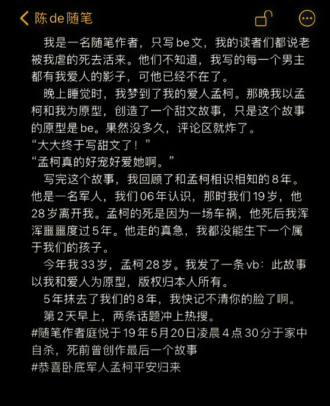
叫的好难听。
《吃火锅～》《 吃火锅[发怒]》
他还尿尿在衣架下面
我家猫也是，没在家叫得跟牛一样，一到家就死夹子[微笑]
长得这么好看就算了，唱歌还这么好听[色] 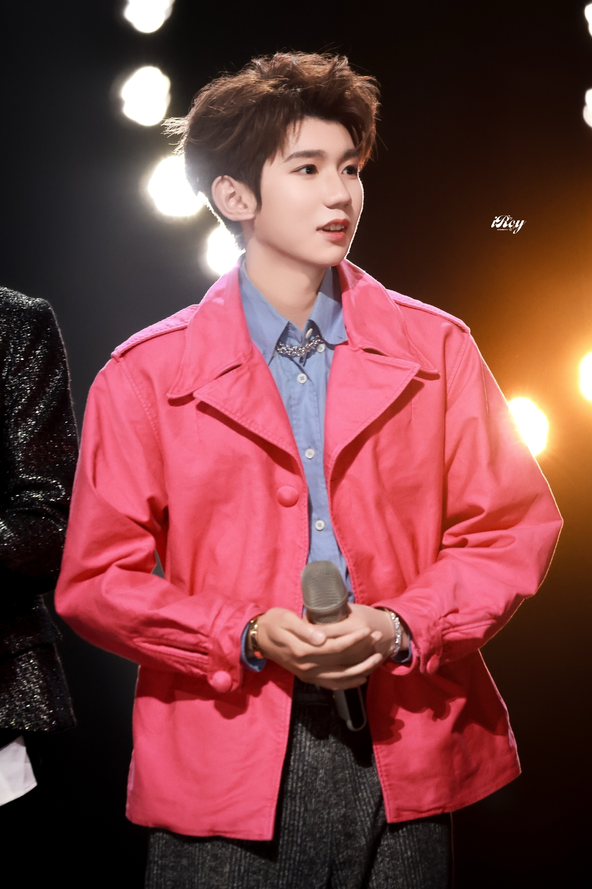
这个嗓音真的容易让人跟着他的感觉走，到故事里走了一圈[泣不成声][泣不成声]
不经意把手机扔床缝里听一晚上[舔屏][舔屏]
王源看起来再红个一百多年问题不大
王源?？？我的天？！？！！竟然刷到你了！你竟然成为了明星，真的好久好久不见了！！ 好怀念之前和王源同居的日子啊，我睡床上，他贴墙上
🧙"王源唱歌时绝对偷偷施了魔法！不然为什么我一听就自动嘴角上扬+眼眶发热？"
怪不得说他眼睛像水一样，真的好清澈好干净[快哭了]
大家是自己去还是带朋友呀[抱抱你] 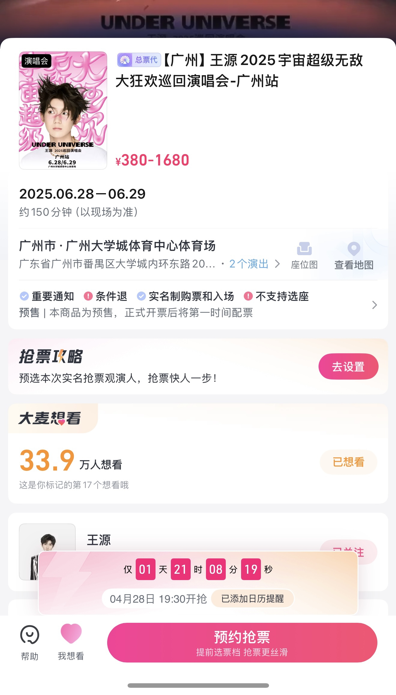
咋的，杀到你兄弟了？[憨笑]
我看到了很多暖心的网友留言评论，谢谢大家，评论里有很多说我给宝宝起的名字不好，取这个名字的意思是，她是我心心念念盼来的闺女，还有就是小宝宝得了恶性肿瘤，其实这个跟她的名字没有什么关联，这个病在怀着她的时候，她自己的基因发生了突变，只是生下来十个月的时候病情才严重，还有就是有些人会说我怎么还有心情发这个视频，我只是想她了，微信朋友圈发不了有多想念孩子，毕竟朋友圈都是亲戚朋友，大家看到了也都难过，我只是想在抖音宣泄一下我的情绪，我只是想她了，白天夜晚脑子眼睛都是她的身影还有一起生活的画面，所以大家不要在去谈论她名字不好怎么样
我一下子愣住了，接着嗓子有点说不出来话[泣不成声]
我再等她变漂亮[流泪] 你却给我看这个？
[流泪]第一次看到这样的转场
天哪，怎么会是这样的一个转场，瞬间泪目
不放五一，你会不会爬出来
请假的来[赞]
一百年后的考古学家...
《智力不祥，心地善良》
怎么做到每一只猫都这么呆的[捂脸]
这位大哥真是心地不详，心地善良，并且实力强大
随主人不太聪明的样子 [黑脸]

不愧是这位大哥捡的猫，性格和智力都和大哥不相上下[憨笑]
@威猛的小脑虎 赶紧送到宠物医院去看去大小便失调，加上肢体乱动，不是脑膜炎就是其他神经疾病[发怒]还有大家麻烦点点赞，把我这条评论顶上去
怎么可以这么呆，是我的大脑皮层褶皱铺平[微笑]
认真防就是这样[看]
你真是，男的矜持一点不认真防，你有话说，认真防碰到你你又生气[捂脸]
不防你说菜，认真防你又不开心。
肘子姐怒了
以前的剧，朦朦胧胧的感觉好甜[色][色][色] 现在的剧，帮我，我被下药了[九转大肠][九转大肠][九转大肠]
我只能说陈冠霖也是生不逢时，他这角色要是放现在肯定杀疯了，病娇疯批绿茶深情男二，颜值高演技好，男主也像个人样，buf叠满了，整个就是爆火一件套
换现在这样对视，脖子掐过来，舌下去[我想静静][我想静静][我想静静][我想静静]
释小龙和穆婷婷那段真的甜腻了[舔屏]
来，我问问你，我能不能运球？
希尔德最大的优点就是你怎么骂他，他都不生气[捂脸]
被亚当斯断了逆天，相当于你打班赛被原神玩家断球了
巴特勒刚刚发的ins 笑死了哈哈哈哈[捂脸] 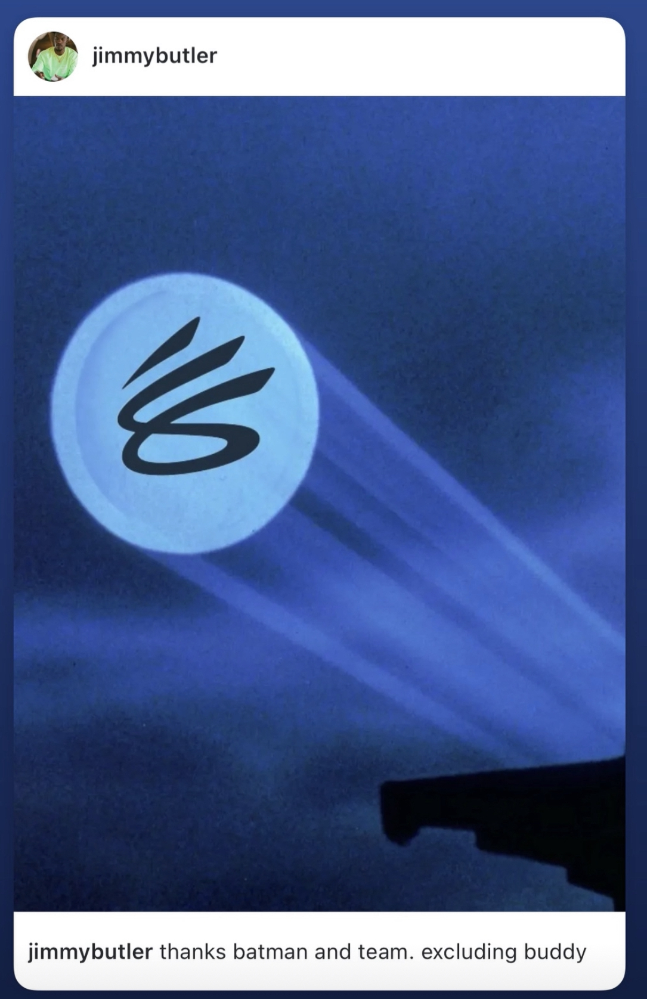
巴特勒你只管休息，明天我底薪加盟勇士
能被中锋断的后卫不多了[捂脸]
我第四节打得怎么样 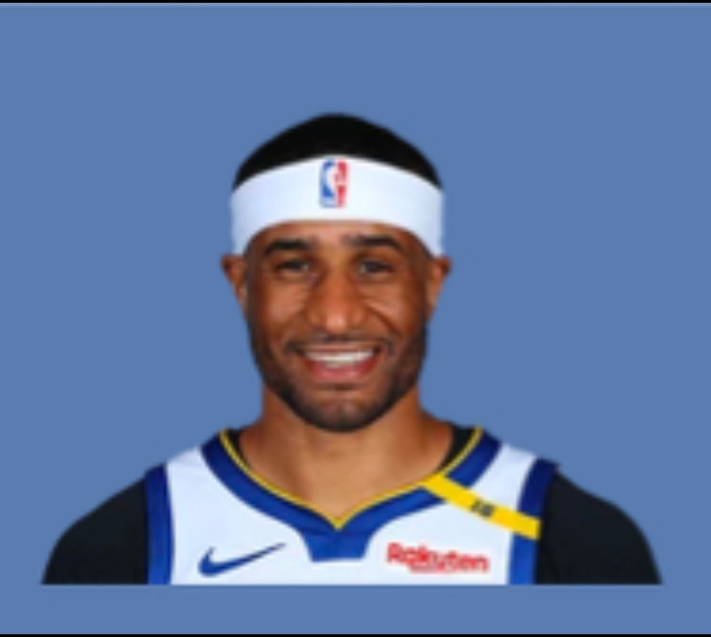
不愧是拿来和克莱比较的男人，运球都一脉相承[看][看][看]
这张太有感觉了 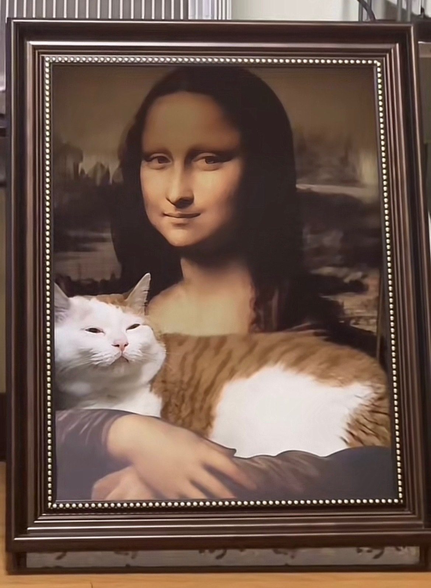
救猫还是救名画的难题解决了[捂脸]
蒙娜丽莎微笑的真正原因找到了
请问这个表情包是它吗，感觉有点像 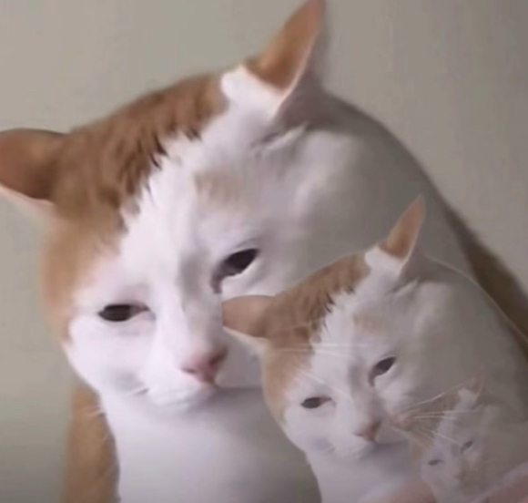
《蒙娜丽莎的困顿》 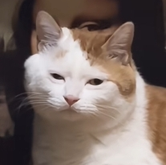
这大鸡腿子一看就很有劲
是的，河南也一样[憨笑]
再睡会吧弟弟！ 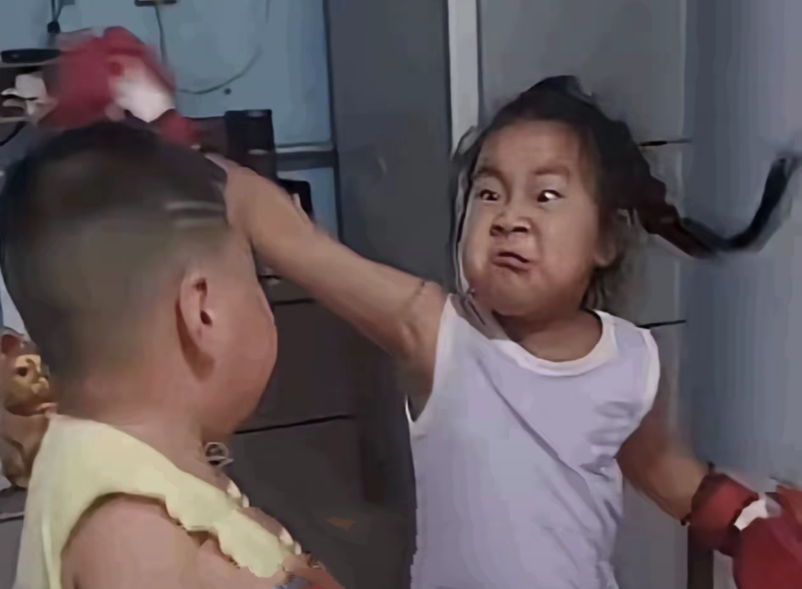
老姐别打我了 我也是妈妈的孩子
初为人母，这动作谁懂 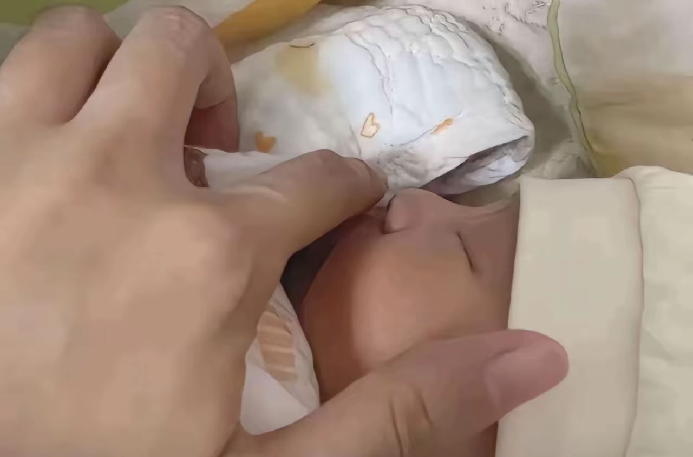
两年后：请你忘记我的模样[呲牙]
Read more: